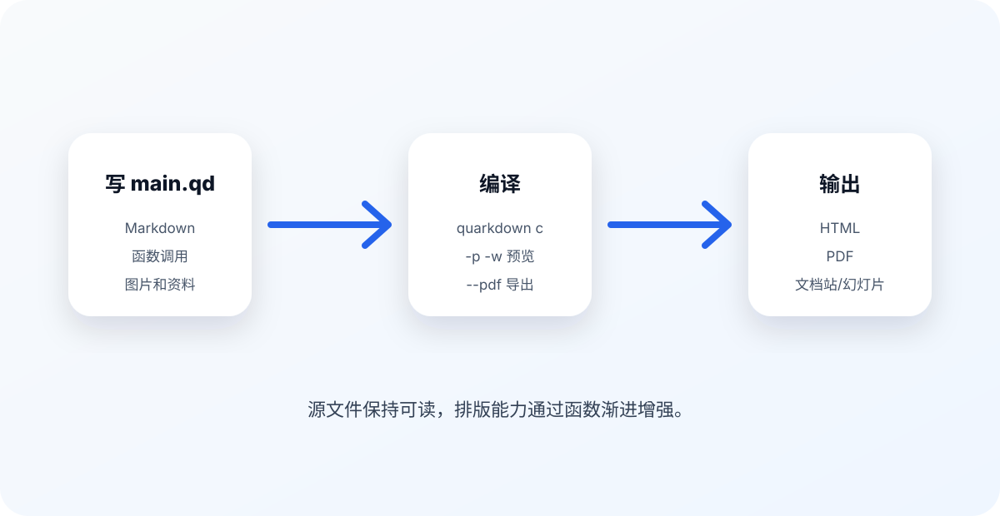

- / -
Quarkdown 手册
itworksig
从 Markdown 到可打印 PDF 的实用模板
作者： itworksig
日期： 2026-05-19
你可以直接改这份 main.qd。每一节都先解释功能，再给出能复制的写法。运行 quarkdown c main.qd -p -w 可以实时预览，运行 quarkdown c main.qd --pdf 可以导出 PDF。
Quarkdown 是 Markdown 的增强版。它保留了 Markdown 的基本写法，同时引入了“函数调用”来控制排版、文档信息、布局、计算和引用。
你可以把一份 Quarkdown 文档拆成三层：

如图 所示，最常见的工作流就是：写 main.qd，编译，预览或导出。
| 命令 | 用途 |
|---|---|
quarkdown create my-doc | 创建新项目 |
quarkdown c main.qd | 编译当前文档 |
quarkdown c main.qd -p -w | 打开浏览器并监听改动 |
quarkdown c main.qd --pdf | 导出 PDF |
quarkdown compile --help | 查看编译参数 |
表 是入门时最值得记住的命令。c 是 compile 的短写。
最小的 Quarkdown 文件可以只有 Markdown：
# 我的文档
这是 **Markdown**。
但是实际做 PDF 或长文时，建议一开始就写上文档元信息：
.docname {我的文档}
.doctype {paged}
.doclang {zh}
# 第一章
正文从这里开始。
文档元信息通常放在文件最上面。它们不是给读者看的正文，而是告诉 Quarkdown：文档叫什么、谁写的、是什么类型、用什么语言。
本文件开头用了这些函数：
.docname {Quarkdown 完整功能写作手册}
.docdescription {一份面向初学者的 Quarkdown 长文模板。}
.docauthor {itworksig}
.dockeywords
- quarkdown
- markdown
- pdf
.doclang {zh}
.docname 会影响输出文件名和页面标题；.docauthor 是单作者快捷写法；.docauthors 可以写多个作者；.dockeywords 对 HTML 输出的搜索和元信息有帮助。
多作者写法可以这样：
.docauthors
- itworksig
- role: author
- Another Name
- role: editor
.doctype 决定文档的整体形态：
| 类型 | 适合场景 | 特点 |
|---|---|---|
plain | 笔记、网页文章 | 连续滚动，没有传统分页 |
paged | PDF、讲义、论文 | 有页面、页边距、页码 |
slides | 演示文稿 | 一页一屏，适合投影 |
docs | 文档站、知识库 | 有侧栏和多页结构 |
如果你想做封面、目录、页码和 PDF，最推荐：
.doctype {paged}
Quarkdown 不要求你必须用某个固定封面函数。最稳的做法是：第一页自己排版成封面，然后用 .pagebreak 进入目录或正文。
本文件的封面结构大概是这样：
.center
!(55%)[封面图](assets/cover.svg)
.center
#! Quarkdown 完整功能写作手册
.center
从 Markdown 到可打印 PDF 的实用模板
.pagebreak
这里有三个技巧：
.center 是 .align {center} 的简写，用来居中内容。#! 是装饰性一级标题，不参与编号和目录。.pagebreak 强制换页。本文件使用 A4 页面，并且左右页边距是镜像的：
.pageformat size:{A4} margin:{2.2cm}
.pageformat side:{left} margin:{2.2cm 2.6cm 2.2cm 1.8cm}
.pageformat side:{right} margin:{2.2cm 1.8cm 2.2cm 2.6cm}
第二、第三行适合双面打印：左页和右页的内侧留更多空间，装订时更舒服。
页眉页脚通过 .pagemargin 写：
.pagemargin {topcenter}
.lastheading depth:{1}
.pagemargin {bottomcenter}
.currentpage / .totalpages
.lastheading depth:{1} 会显示最近的一级标题；.currentpage 是当前页码；.totalpages 是总页数。
很多书会让目录页使用罗马数字，正文重新从 1 开始。写法是：
.formatpagenumber {i}
.tableofcontents title:{目录}
.pagebreak
.resetpagenumber start:{1}
.formatpagenumber {1}
目录由 .tableofcontents 生成，编号由 .numbering 控制。
最简单写法：
.tableofcontents
限制目录深度：
.tableofcontents title:{目录} maxdepth:{2}
maxdepth:{2} 表示只收集 # 和 ##，不收集更深的 ###。
本文件使用：
.numbering
- headings: 1.1.1
- figures: 1.1
- tables: 1.1
- equations: 1.1
- code: 1.1
- footnotes: 1
常见规则：
headings 控制章节标题编号。figures 控制图片编号。tables 控制表格编号。equations 控制公式编号。code 控制代码块编号。none 可以关闭某类编号。如果你想让一个标题看起来像标题，但不进目录、不编号，可以在 # 后面加 !：
##! 这是一个装饰性标题
本文件封面上的 #! Quarkdown 完整功能写作手册 就是这个用途。
Quarkdown 继承 Markdown，所以你仍然可以写普通 Markdown。
你可以写 加粗、斜体、删除线、行内代码，也可以写链接：Quarkdown。
**加粗**
*斜体*
~~删除线~~
`行内代码`
[链接文字](https://example.com)
无序列表：
有序列表：
main.qd。任务列表：
普通引用：
Quarkdown 的强项，是让 Markdown 在保持可读性的同时拥有更多排版控制力。
脚注写法和 GFM 类似1。也可以写紧凑脚注22这是一个直接写在引用处的紧凑脚注。。
1这是一个普通脚注定义。paged 文档里通常出现在页面底部，plain 文档里可能作为旁注显示。图片是长文里最常用的增强内容之一。
Markdown 原生写法：

Quarkdown 增强写法，可以控制尺寸：
!(80%)[替代文字](assets/workflow.svg)
!(640px)[替代文字](assets/workflow.svg)
!(12cm)[替代文字](assets/workflow.svg)
如果图片单独占一段，并且带标题，就会成为 figure。再加 {#id}，就能在正文里引用：
!(82%)[流程图](assets/workflow.svg "从源文件到输出的流程") {#workflow}
如图 .ref {workflow} 所示，Quarkdown 的流程很直接。
常见单位：
| 写法 | 含义 |
|---|---|
!(80%) | 占可用宽度的 80% |
!(640px) | 固定 640 像素宽 |
!(12cm) | 固定 12 厘米宽 |
!(6cm 3cm) | 固定宽 6cm、高 3cm |
!(_ 3cm) | 宽度自动，高度 3cm |
Quarkdown 支持 Markdown 表格，并能给表格加标题和引用 ID。
| 功能 | 函数 | 常用场景 |
|---|---|---|
| 目录 | .tableofcontents | 长文、PDF |
| 页码 | .currentpage | 页脚 |
| 图片引用 | .ref | 图表说明 |
| 盒子 | .box | 提示、警告、注释 |
| 功能 | 函数 | 常用场景 |
| --- | --- | --- |
| 目录 | `.tableofcontents` | 长文、PDF |
| 页码 | `.currentpage` | 页脚 |
"核心函数速查" {#core-functions-table}
表格后面那一行 "标题" {#id} 就是表格标题和引用 ID。
Quarkdown 的表格最终会渲染成 HTML <table>，所以表格线条最稳的做法是用 .css 写：
.css
table {
border-collapse: collapse;
width: 100%;
}
table th,
table td {
border: 1px solid #cbd5e1;
padding: 8px 10px;
}
table th {
background: #eff6ff;
font-weight: 700;
}
table tbody tr:nth-child(even) {
background: #f8fafc;
}
这里几个属性很常用：
| CSS | 作用 |
|---|---|
border-collapse: collapse | 合并相邻单元格边框，不会出现双线 |
border: 1px solid #cbd5e1 | 给表格单元格加线 |
padding: 8px 10px | 让文字不要贴着边框 |
tr:nth-child(even) | 偶数行换底色，形成斑马纹 |
Quarkdown 支持 TeX 风格公式。行内公式写成 $ E = mc^2 $。如果公式单独成段，会显示成块级公式。
行内公式示例：
块级公式：
多行公式可以用 $$$：
你可以用 Markdown 代码块，也可以用 Quarkdown 的 .code 函数。
export function add(a: number, b: number) {
return a + b;
}代码 是普通 fenced code block，并带标题和 ID。
.code 函数.code 可以设置语言、行号、聚焦行，也可以读取外部文件：
export function greet(name: string) {
return `Hello, ${name}!`;
}
console.log(greet("Quarkdown"));
对应写法：
.code lang:{typescript} focus:{1..3}
.read {snippets/hello.ts}
如果不想显示行号：
.code lang:{typescript} linenumbers:{no}
console.log("No line numbers");
Quarkdown 的 HTML 输出会加载 highlight.js。代码高亮通常分两层：
pre、figure:has(pre)、figcaption 控制代码框外观。.hljs-* 控制关键字、字符串、注释、数字、函数名等 token 颜色。下面是一套接近 GitHub Light 的 highlight.js 主题：
.css
figure:has(pre),
pre {
border: 1px solid #d0d7de;
border-radius: 9px;
background: #f6f8fa;
box-shadow: 0 10px 28px rgba(15, 23, 42, 0.10);
overflow: hidden;
}
pre {
padding: 16px 18px;
line-height: 1.58;
font-size: 0.88em;
}
pre code,
pre code.hljs {
background: transparent;
color: #24292f;
}
figure:has(pre) figcaption {
background: #f6f8fa;
border-top: 1px solid #d0d7de;
color: #57606a;
font-size: 0.85em;
padding: 8px 14px;
}
.hljs-comment,
.hljs-quote {
color: #6e7781;
font-style: italic;
}
.hljs-keyword,
.hljs-selector-tag {
color: #cf222e;
font-weight: 650;
}
.hljs-title,
.hljs-title.function_,
.hljs-function .hljs-title {
color: #8250df;
font-weight: 650;
}
.hljs-string,
.hljs-attr {
color: #116329;
}
.hljs-number,
.hljs-literal,
.hljs-variable {
color: #953800;
}
.hljs-type,
.hljs-class .hljs-title {
color: #0550ae;
font-weight: 650;
}
pre 是代码块主体，figure:has(pre) 是带标题或编号的代码块外框，figcaption 是代码标题/编号区域。.hljs-keyword、.hljs-string、.hljs-comment 这些选择器就是 highlight.js 给语法 token 加的 class。
常见 highlight.js class：
| Class | 控制内容 |
|---|---|
.hljs-keyword | function、return、const 这类关键字 |
.hljs-string | 字符串 |
.hljs-comment | 注释 |
.hljs-number | 数字 |
.hljs-title.function_ | 函数名 |
.hljs-type | 类型名 |
.box 是非常实用的块级组件。它适合写提示、注意事项、危险警告和解释性插入段。
如果不指定 type，默认是普通 callout。
type:{tip} 适合写建议、快捷方法、推荐做法。
type:{note} 适合写补充信息，不打断主线。
type:{warning} 适合写需要读者注意的坑。
type:{error} 适合写不要这么做、会导致失败的情况。
写法：
.box {Warning} type:{warning}
这里写警告内容。
如果默认盒子都是灰色，可以用 CSS 按类型改颜色。Quarkdown 输出的盒子会带 .box，同时会带 .tip、.note、.warning、.error 这类类型 class。
.css
.box {
border: 1px solid #cbd5e1;
border-left-width: 6px;
border-radius: 10px;
background: #ffffff;
box-shadow: 0 8px 20px rgba(15, 23, 42, 0.06);
}
.box.tip {
border-color: #14b8a6;
background: #f0fdfa;
}
.box.note {
border-color: #3b82f6;
background: #eff6ff;
}
.box.warning {
border-color: #f59e0b;
background: #fffbeb;
}
.box.error {
border-color: #ef4444;
background: #fef2f2;
}
这样读者一眼就能区分：绿色是建议，蓝色是说明，黄色是注意，红色是错误或危险。
当 Markdown 的线性排版不够用时，就用布局函数。
.align 可以设置水平对齐，.center 是居中简写。
这一行靠右。
这一行居中。
写法：
.align {end}
这一行靠右。
.center
这一行居中。
.row这是第一个块。
这是第二个块。
这是第三个块。
写法：
.row gap:{1cm} cross:{stretch}
.box {左侧}
内容 A
.box {右侧}
内容 B
.row 依靠 Markdown 的“块”来识别项目，所以每个项目之间要空一行。
.gridA. 文档元信息
B. 页面设置
C. 内容写作
D. 编译输出
写法：
.grid columns:{2} gap:{0.6cm}
A
B
C
D
.float浮动内容会脱离正常文档流，让后面的文字绕着它排版。这个功能适合小图标、侧边提示和短注释，但不要滥用；长文里过多浮动元素会让页面变得难以预测。
写法：
.float {end}
!(32%)[小图](assets/cover.svg)
.pageformat columns:{2} 可以让之后的页面变成多栏。下面这一小段故意切换到双栏，演示杂志或论文式排版。
这是双栏页面。多栏适合词条、报告摘要、论文式说明，也适合把短段落密集排在一页里。一级、二级、三级标题通常会跨栏或按主题呈现，正文则进入栏布局。
你可以在某个位置临时放置跨栏内容：
.fullspan 会让里面的内容跨过所有栏。适合放宽图、重点提示或章节摘要。
双栏文本不适合很长的代码块，也不适合复杂表格。遇到宽内容时，建议用 .fullspan 或切回单栏。
Quarkdown 可以直接嵌入 Mermaid。适合流程图、时序图、状态图和简单架构图。
flowchart TD
A[Write main.qd] --> B[Compile]
B --> C{Output?}
C -->|HTML| D[Preview in browser]
C -->|PDF| E[Export printable document]
C -->|Text| F[Plain text]写法：
.mermaid caption:{Quarkdown 文档处理流程}
flowchart TD
A[Write main.qd] --> B[Compile]
B --> C{Output?}
C -->|HTML| D[Preview in browser]
C -->|PDF| E[Export PDF]
Quarkdown 的函数系统是它和普通 Markdown 最大的区别。
函数调用以点号开头：
.pow {5} to:{2}
它会计算 5 的 2 次方：25。
链式调用也可以：
.sqrt {10}::round::multiply {2}
结果是：6。
.var 可以定义变量：
当前项目名是 Quarkdown 手册。
写法：
.var {projectname} {Quarkdown 手册}
当前项目名是 **.projectname**。
你可以声明自己的函数：
这个盒子不是手写 .box，而是通过 .function 封装出来的。
写法：
.function {examplebox}
title content:
.box {.title} type:{tip}
.content
.examplebox {自定义函数生成的盒子}
这里是内容。
可选参数用问号：
Hello, Quarkdown from anonymous.
Hello, Quarkdown from Codex.
写法：
.function {hello}
name from?:
Hello, **.name** from .from::otherwise {anonymous}.
.hello {Quarkdown}
.hello {Quarkdown} from:{Codex}
条件判断可以用 .if。例如：
4 是偶数，所以这句话会出现。
写法：
.if {.iseven {4}}
4 是偶数，所以这句话会出现。
循环适合生成重复内容。不同数据结构有不同写法，初学时建议先从官方示例开始。下面是一个常见模式：
.foreach {.docauthors}
name info:
**.name**
如果暂时记不住，也没关系。长文写作的第一阶段，真正高频的是 .docname、.doctype、.tableofcontents、.numbering、.pagemargin、.box、.ref 和 .code。
Quarkdown 可以读取项目里的文件。
.read 可以读取文件内容。前面 .code 示例已经读过 snippets/hello.ts：
export function greet(name: string) {
return `Hello, ${name}!`;
}
console.log(greet("Quarkdown"));
你也可以只读取一部分行：
.read {snippets/hello.ts} lines:{1..3}
Quarkdown 有权限系统。默认可以读取项目目录内文件，也可以嵌入原生 HTML/CSS。如果要读取项目外文件或访问网络，编译时可能需要：
quarkdown c main.qd --allow global-read
quarkdown c main.qd --allow network
初学建议：图片、CSV、代码片段都放到项目目录内，比如 assets/ 和 snippets/。
如果你需要更强的网页控制，可以写 HTML 或 CSS。不过做 PDF 文档时，不要太早依赖复杂 CSS；先把结构写清楚。
原生 HTML 可以这样放：
<div style=“border: 1px solid #94a3b8; padding: 12px; border-radius: 8px;”> 这是一个原生 HTML 块。默认权限允许 native content。 </div>
写法：
<div style="border: 1px solid #94a3b8; padding: 12px;">
这是一个原生 HTML 块。
</div>
建议只在这些情况下用 CSS：
不要用 CSS 替代所有 Quarkdown 函数。能用 .pageformat、.pagemargin、.box、.row 解决的，优先用这些函数。
Quarkdown 的主题会给文档提供默认字体，但实际做中文 PDF、俄语文档或中俄混排时，默认字体不一定符合你的审美，也不一定覆盖所有字符。最稳的做法是：用 .font 设置全局字体 fallback，用 .css 做局部语言和 class 的精确控制。
本文件顶部已经放了 .font 和 .css，它们做了四件事：
Quarkdown 官方提供 .font 函数。最简单的全局字体设置是：
.font {Times New Roman}
也可以分别指定正文、标题、代码和字号：
.font {Times New Roman} heading:{Times New Roman} size:{11pt}
如果要设置 fallback，就多次调用 .font。后面的字体优先级更高；当后面的字体不支持某些字符时，会回退到前面配置过的字体：
.font {PingFang SC}
.font {PT Serif}
.font {Times New Roman} heading:{Times New Roman} code:{SFMono-Regular} size:{11pt}
这段的意思是：优先用 Times New Roman，俄语可以走 Times New Roman 或 PT Serif，中文字符如果前面的字体没有字形，就回退到 PingFang SC。
如果不用 .font，也可以用 .css 写原生 CSS。注意：不要直接写 <style>...</style>，那样可能会被排成正文。应该写成：
.css
body {
font-family: "Times New Roman", "PingFang SC", "Noto Serif CJK SC", serif;
}
font-family 不是只写一个字体，而是写一个字体列表。渲染器会从左到右寻找可用字体：
| 顺序 | 字体 | 用途 |
|---|---|---|
| 1 | Times New Roman | 英文、俄文衬线字体 |
| 2 | PingFang SC | macOS 中文字体 |
| 3 | Noto Serif CJK SC | 常见 CJK 备用字体 |
| 4 | serif | 最后的通用兜底 |
表 里的顺序很重要。中文字体通常也能显示英文，但英文字体通常不能完整显示中文，所以混排时要把拉丁/俄文字体放前面，中文字体放后面兜底。
| 场景 | 推荐字体栈 |
|---|---|
| 中文正文，偏现代 | "PingFang SC", "Hiragino Sans GB", "Noto Sans CJK SC", "Microsoft YaHei", sans-serif |
| 中文正文，偏书籍 | "Songti SC", "Noto Serif CJK SC", "SimSun", serif |
| 俄语正文，偏论文 | "PT Serif", "Times New Roman", "Georgia", serif |
| 俄语正文，偏现代 | "Inter", "Arial", "Helvetica", sans-serif |
| 中俄混排 | "Times New Roman", "PingFang SC", "Noto Serif CJK SC", serif |
| 代码 | "SFMono-Regular", "JetBrains Mono", "Menlo", "Consolas", monospace |
macOS 上中文常用 PingFang SC、Songti SC、Hiragino Sans GB；Windows 上常用 Microsoft YaHei、SimSun；Linux 或跨平台环境里常用 Noto Sans CJK SC、Noto Serif CJK SC。
HTML 和 CSS 支持 lang 属性。先用 .css 定义语言规则：
.css
:lang(zh) {
font-family: "PingFang SC", "Noto Sans CJK SC", sans-serif;
}
:lang(ru) {
font-family: "PT Serif", "Times New Roman", serif;
}
然后在正文里用 HTML 标记语言：
这是一段中文，使用中文字体。 Это русский текст, использующий русский шрифт.
写法：
<p>
<span lang="zh">这是一段中文，使用中文字体。</span>
<span lang="ru">Это русский текст, использующий русский шрифт.</span>
</p>
这种方法适合“语种明确”的内容，比如中文解释后面跟一段俄文原文。
有时候你不想按语言自动判断，而是想明确指定某一小段使用中文字体。可以先定义 class：
.css
.font-zh {
font-family: "PingFang SC", "Noto Sans CJK SC", sans-serif;
}
然后这样用：
这整段都会使用中文字体：春风又绿江南岸，明月何时照我还。
写法：
.container classname:{font-zh}
这整段都会使用中文字体。
如果只想控制一句话中的几个字，可以用 .html：
.html
这是一句混排文本，<span class="font-zh">这几个中文字符指定中文字体</span>，其余部分走全局字体。
俄文同理：
.css
.font-ru {
font-family: "PT Serif", "Times New Roman", "Georgia", serif;
}
实际效果：
Это пример русского абзаца. Кириллица должна выглядеть ровно и спокойно.
写法：
.container classname:{font-ru}
Это пример русского абзаца.
混排时推荐一句话里分别标记语言：
术语“注意力机制”在俄语里可以写作 «механизм внимания» ，两边分别走中文和俄文字体。
写法：
.html
<p>
<span lang="zh">术语“注意力机制”在俄语里可以写作</span>
<span lang="ru">«механизм внимания»</span>
<span lang="zh">，两边分别走中文和俄文字体。</span>
</p>
如果你不想每次手写 .container classname:{font-zh}，可以用 .function 包一层。这个封装适合整段或整块内容：
这句话通过自定义函数指定中文字体。
Это предложение использует пользовательскую функцию для русского шрифта.
写法：
.function {zhfont}
content:
.container classname:{font-zh}
.content
.function {rufont}
content:
.container classname:{font-ru}
.content
.zhfont {这句话通过自定义函数指定中文字体。}
.rufont {Это предложение использует пользовательскую функцию для русского шрифта.}
如果你希望别人打开 PDF 或 HTML 时字体完全一致，可以把字体文件放进项目，比如：
assets/
└─ fonts/
├─ NotoSerifSC-Regular.otf
└─ PTSerif-Regular.ttf
然后用 .font 直接加载本地字体文件：
.font {assets/fonts/NotoSerifSC-Regular.otf}
.font {assets/fonts/PTSerif-Regular.ttf}
.font {Times New Roman}
.font 也支持 URL 和 Google Fonts，比如：
.font {GoogleFonts:Noto Serif SC}
.font {GoogleFonts:PT Serif}
.font {Times New Roman}
如果你需要更细的 class 控制，也可以用 .css 写 @font-face：
.css
@font-face {
font-family: "MyChineseSerif";
src: url("assets/fonts/NotoSerifSC-Regular.otf") format("opentype");
}
@font-face {
font-family: "MyRussianSerif";
src: url("assets/fonts/PTSerif-Regular.ttf") format("truetype");
}
.font-zh {
font-family: "MyChineseSerif", serif;
}
.font-ru {
font-family: "MyRussianSerif", serif;
}
这招最适合正式 PDF。代价是项目文件会变大，而且要确认字体授权允许嵌入或分发。
如果你导出的 PDF 里中文或俄语显示不对，按这个顺序查：
font-family fallback 里有没有可用兜底字体。main.qd 正确。.font 适合控制全局字体家族和字号，.css 适合做语言、class、@font-face 这类精细控制。.container 支持 fontsize、fontweight、fontstyle、fontvariant 等文本样式，适合控制字号、粗细、斜体和小型大写。
例如控制字号和斜体：
这是 .container 控制字号和斜体的例子。字体家族仍然由前面的 CSS 决定。
写法：
.container padding:{0.4cm} border:{#94a3b8} borderstyle:{dashed} fontsize:{large} fontstyle:{italic}
这是 `.container` 控制字号和斜体的例子。
长文写到一定规模后，可以拆文件。
你可以把章节拆成 chapters/intro.qd，然后在 main.qd 里包含：
.include {chapters/intro.qd}
拆文件的好处：
my-book/
├─ main.qd
├─ assets/
│ ├─ cover.svg
│ └─ workflow.svg
├─ snippets/
│ └─ hello.ts
└─ chapters/
├─ intro.qd
└─ layout.qd
写文档时最常用：
quarkdown c main.qd -p -w
-p 打开预览，-w 监听改动。你保存文件后，浏览器会刷新。
quarkdown c main.qd --pdf
如果你做的是 PDF，建议用 paged 类型，并且设置页面：
.doctype {paged}
.pageformat size:{A4} margin:{2.2cm}
检查错误时可以用：
quarkdown c main.qd --strict
非严格模式下，某些错误可能显示成文档里的错误盒；严格模式会直接让命令失败，更适合做自动化检查。
quarkdown c main.qd --clean
注意：--clean 会清空输出目录再生成新文件，别把重要文件放到输出目录里。
.docname {课程讲义}
.doctype {paged}
.doclang {zh}
.pageformat size:{A4} margin:{2cm}
.pagemargin {bottomcenter}
.currentpage / .totalpages
.tableofcontents
# 第一讲
正文。
.docname {技术文章}
.doctype {plain}
.doclang {zh}
# 问题
## 背景
## 实现
## 总结
.docname {项目报告}
.doctype {paged}
.theme {paperwhite} layout:{latex}
.numbering
- headings: 1.1
- figures: 1.1
- tables: 1.1
.center
#! 项目报告
.pagebreak
.tableofcontents
.pagebreak
# 摘要
# 正文
| 类别 | 函数 | 说明 |
|---|---|---|
| 元信息 | .docname | 文档名 |
| 元信息 | .docauthors / .docauthor | 作者 |
| 元信息 | .doctype | 文档类型 |
| 样式 | .font | 全局字体和字号 |
| 样式 | .css | 注入 CSS 美化表格、代码框、盒子 |
| 页面 | .pageformat | 页面尺寸、边距、栏数 |
| 页面 | .pagemargin | 页眉页脚和边注 |
| 页面 | .currentpage / .totalpages | 当前页和总页数 |
| 页面 | .pagebreak | 手动换页 |
| 目录 | .tableofcontents | 自动目录 |
| 编号 | .numbering | 控制章节、图表、公式编号 |
| 引用 | .ref | 交叉引用 |
| 布局 | .center / .align | 对齐 |
| 布局 | .row / .column / .grid | 横排、纵排、网格 |
| 布局 | .float | 浮动元素 |
| 布局 | .container | 容器、字号、粗细、斜体 |
| 组件 | .box | 提示框、警告框 |
| 代码 | .code | 增强代码块 |
| 图表 | .mermaid | Mermaid 图 |
| 数据 | .read | 读取文件 |
| 脚本 | .var | 变量 |
| 脚本 | .function | 自定义函数 |
| 脚本 | .if | 条件判断 |
Quarkdown 最好的学习方式不是先背完所有函数，而是先写一篇真实文档：封面、目录、图片、表格、公式、页码，这些一旦跑通，你就已经能完成大多数 PDF 和技术长文。
下一步可以做三件事：
main.qd 复制成自己的模板。quarkdown c main.qd -p -w 边改边看。Original references: Quarkdown Wiki · Quarkdown Docs